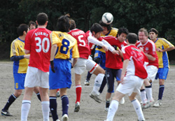
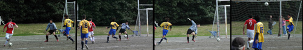
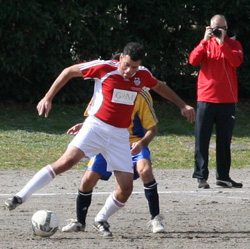
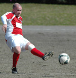

|
Oi Futo Dai Ichi, Saturday 7th March
BEFC and Swiss played out a largely uneventful goalless draw in the dirt of Oifuto, giving the Embassy their first clean sheet and only their second point of the season. Indeed, they will have left the happier of the two sides having played the last half hour with only ten men.
The game started slowly and the rain battered pitch left both sides struggling to string many passes together as bobbles and bumps played a large part in the early exchanges. In one of few moves of real quality Alex picked out Steve with a delicious cross only for the header to hit the bar and go over. In another, Gary surged forward from deep and after a series of one-twos found himself in the box, but his left foot effort was cleared off the line by a covering defender, and so with the Swiss restricted to only a few long range efforts, the half-time score was nil apiece.
The second half began a little more stretched with both sides having adjusted to the pitch though neither created anything clear cut. The game, however, took a dramatic turn ten minutes into the half when G*ry W**son was expelled for a series of expletives that would have made even Christian Bale blush. BEFC reorganized though, and coped well with constant Swiss pressure. Taka and Rob made timely challenges and Tim and Richie neutralized any danger from the flanks. The midfield worked tirelessly, tracking back with heavy legs, and when the final whistle went, the Embassy felt like they could afford a satisfied smile.
In truth, this game was not one for the purists, and would certainly have been last on Match of the Day. I cannot recall either keeper having a save to make, leaving the spectators (Sid and a lone schoolgirl) demanding 80 minutes of their lives back.
Report by Robert Horsfield
|